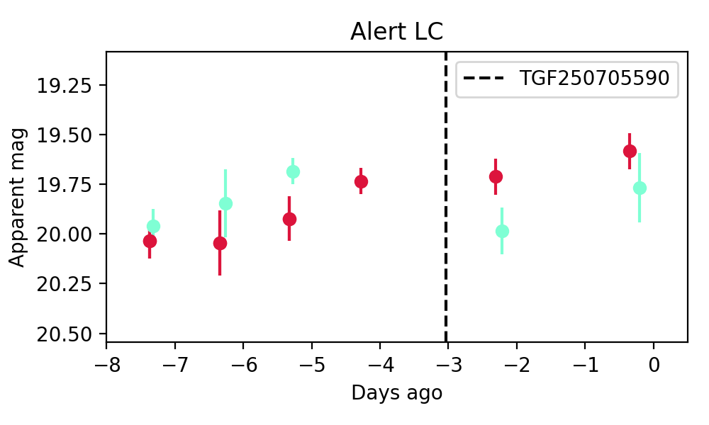

Candidate List 20250708Previous Day Next Day
Section 1: New Sources (age<1d) Section 2: Old (1-5d) sources observed last nightplaceholder
Section 1: New Afterglow/FBOT Cands Last Night (0)
Section 2: Older Sources Observed Last Night (4)
0. ZTF25aayrvly (Afterglow?) [Back to Top] [Share] [Trigger Swift] [Fritz] [Lasair]RA, Dec: 250.1628, 51.25529 16h40m39.07s, 51d15m19.04sGalactic (l, b): 78.6463, 41.0356 ext(g-r) = 0.026
PS1: 0 sources in 3 arcsec
LegacySurvey: 0 sources in 3 arcsec

Extinction-corrected gr color:
From alerts: 0.16 +/- 0.2 mag
Consistent with synchrotron, g-r>0!
Rise Rate:
g: 0.6 mag/day
r: 0.07 mag/day
i: -99 mag/day
Fade Rate:
g: -99 mag/day
r: -99 mag/day
i: -99 mag/day
1. ZTF25aazohsf (Afterglow?) [Back to Top] [Share] [Trigger Swift] [Fritz] [Lasair]RA, Dec: 285.33305, -8.73169 19h 1m19.93s, -8d-43m-54.08sGalactic (l, b): 26.25184, -6.1532 ext(g-r) = 0.31
PS1: 1 source in 3 arcsec Closest: d = 3.60 arcsec photoz=0.27+/-0.28 peak abs mag = -23.70
LegacySurvey: 0 sources in 3 arcsec
Extinction-corrected gr color:
From alerts: -0.09 +/- 0.16 mag
Consistent with synchrotron, g-r>0!
Rise Rate:
g: -99 mag/day
r: 2.31 mag/day
i: -99 mag/day
Fade Rate:
g: 0.24 mag/day
r: 0.18 mag/day
i: -99 mag/day
2. ZTF25aazzyvo (Afterglow?) [Back to Top] [Share] [Trigger Swift] [Fritz] [Lasair]RA, Dec: 278.58497, -27.03498 18h34m20.39s, -27d-2m-5.92sGalactic (l, b): 6.84997, -8.52109 ext(g-r) = 0.339
PS1: 1 source in 3 arcsec Closest: d = 1.22 arcsec photoz=0.11+/-0.02 peak abs mag = -22.90
LegacySurvey: 0 sources in 3 arcsec
Extinction-corrected gr color:
From alerts: -1.17 +/- 99 mag
Rise Rate:
g: 0.56 mag/day
r: 3.43 mag/day
i: -99 mag/day
Fade Rate:
g: -99 mag/day
r: 0.44 mag/day
i: -99 mag/day
3. ZTF25abadtsx (Afterglow?) [Back to Top] [Share] [Trigger Swift] [Fritz] [Lasair]RA, Dec: 311.15643, -1.72004 20h44m37.54s, -1d-43m-12.14sGalactic (l, b): 45.07336, -25.80998 ext(g-r) = 0.079
PS1: 0 sources in 3 arcsec
LegacySurvey: 0 sources in 3 arcsec
Extinction-corrected gr color:
From alerts: 0.09 +/- 0.04 mag
Consistent with synchrotron, g-r>0!
Rise Rate:
g: 1.44 mag/day
r: 1.34 mag/day
i: -99 mag/day
Fade Rate:
g: -99 mag/day
r: -99 mag/day
i: -99 mag/day